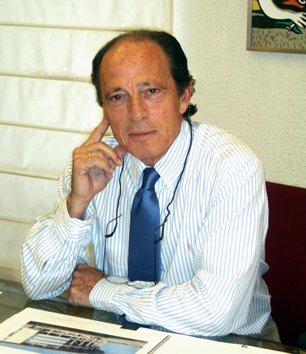

El Estudio
Quienes somos

Estudio López-Amor está dirigido desde su fundación en 1967 por Jaime López-Amor Herrero. Arquitecto por la Escuela Superior de Arquitectura de Madrid, año 1966. Especialidad Urbanismo.
- Medalla de plata al Mérito Deportivo año 1959
- Becario de la EXCO años 1.964 y 1.965
- Especialista en edificios antiatómicos
- Arquitecto contratado por el Ministerio de Educación y Ciencia, para el Plan Nacional de Instalaciones Deportivas
- Consejero del 1º Seminario de Instalaciones Deportivas año 1.969
- Arquitecto contratado por la Administración Local como Arquitecto Municipal
- Arquitecto seleccionado por el Ministerio de Educación y Ciencia, para la redacción de Proyectos de Centros Escolares años 1.974 y 1.975
- Director General de Educación Física y Deportes 1979-1982
- Vicepresidente 1º del Comité Olímpico Español 1979-1983
- Miembro del Real Comité Organizador del Mundial de Fútbol 1982
- Miembro de los grupos de trabajo del Real Comité Organizador del Mundial de Fútbol 1982 en las Comisiones de Infraestructuras de Sedes, Calendario Deportivo y Coordinación
- Profesor titular del 1º “Máster en Administración y Dirección del Deporte” organizado por el Instituto Universitario Olímpico de Ciencias del Deporte
- Profesor del “Máster de gestión de edificación, rehabilitación y control técnico” en el Centro Superior de Arquitectura, Fundación Camuñas (2004-2005)
- Ponencias en el “Curso de Dirección de Proyectos Interdisciplinares” en el Colegio Oficial de Ingenieros de Caminos, Canales y Puertos. 2005
- Profesor del III y IV "Máster Universitario en Gestión de Organizaciones Deportivas”
- Colaborador en distintas publicaciones profesionales